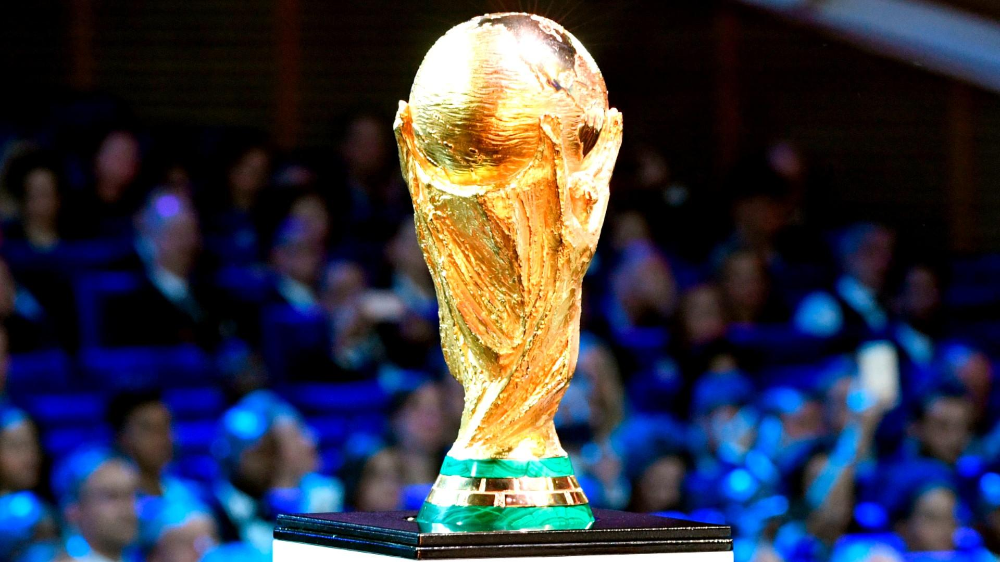

Sports
I was born to a family that love playing and watching football. I was raised up next to a ball when I was 3 year old. Growing up, my sport I picked to play the most was football. I could play all the positions in a 11 player team, and the position I was assigned the most to play was Centre Back. However, people always saw my appearance in the benchmark as I had so many classes and papers and documents to study.
Why Centre Back? Because I played tough football, had a lot of possession and create chances. I would tackle the ball whenever I had a chance to do so.I would draw a lot of fouls just to make sure my goalie stress free and my goal frame remain nil to the end of the match.
You may ask me what is the best match I have ever seen? Come click and check this link to have a feeling of my taste of football mundial.